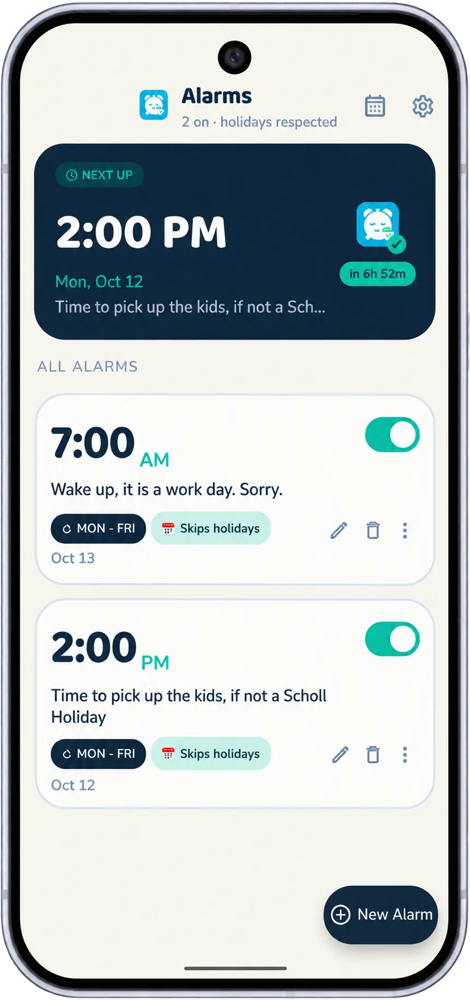

もっと賢く目覚める、無理はしない
Workday Wake は、勤務スケジュールに合わせて自動調整する賢いアラームアプリです。 週末と祝日はスキップされるので、必要なときだけ目覚められます。
ダウンロード
Workday Wake はまだリリースされていません。以下の 2 つの導入経路は初回リリース とともに公開されます ‐ 公開日にここからリンクします。
Google Play
任意の応援チップ（気持ちばかり）付きの Play 完全版。まずクローズド・ベータから始まり、 このボタンはストア・バッジになります。
近日 — 最初のリリース直接 APK
GitHub Releases から署名済みユニバーサル APK を入手（同じアプリ、応援チップの代わりに Ko-fi の寄付リンク）。SHA-256 フィンガープリントをリリースとともに公開します。
近日 — 最初のリリース仕様
言語
English, Deutsch, Español (LatAm), Français, Português (Brasil), 中文 （简体）, 日本語, など — コミュニティによる翻訳、追加歓迎。
対応 Android
Android 12 以降（API 31）。アラームは setAlarmClock() で
スケジュールされるため、新しい Android では正確なアラームの解除設定は不要です。
権限
USE_EXACT_ALARM‐ 設定した分にアラームを鳴らすPOST_NOTIFICATIONS‐ アラームと事前予告の通知を表示FOREGROUND_SERVICE‐ 信頼性ガードを生かし続ける（任意の層）RECEIVE_BOOT_COMPLETED‐ 再起動後にアラームを再設定WAKE_LOCK,VIBRATE‐ アラーム時刻に起こして振動させるINTERNET,ACCESS_NETWORK_STATE‐ 祝日カレンダーのダウンロード専用
位置情報の権限は一切要求しません。
検証可能なプライバシー
完全な証拠 ‐ 正確な権限リスト、祝日のための唯一の外向き通信と その中身、ストアのデータ安全への記載 — はプライバシーページ に文書化されています。アラーム、スケジュール、設定が端末から出ることはありません。
機能
スマートなスケジューリング
選んだ地域の週末と祝日には、アラームを自動で鳴らしません。
地域に対応
国と地方区分の公式な祝日・勤務日パターンに合わせて動作します。GPS は一切読みません。
勤務日をカスタマイズ
自分の勤務スケジュールを定義できます。シフト勤務や変則週にも最適です。
祝日もカスタマイズ
個人の祝日、休暇、ゆっくり寝ていたい日を追加できます。
複数アラーム
曜日ごとに別のアラームを、ラベルとサウンド付きで設定できます。
美しい UI
Material Design に沿った、洗練されたモダンなインターフェイス。
アプリのプレビュー

ドキュメント
はじめに
Workday Wake へようこそ！始め方はこちら：
- Workday Wake はまだリリースされていません。 初回リリースに向けて準備中です。ビルドが公開され次第、このページから導入オプションへリンクします。
- アプリを開き、通知の権限を許可する
- 国と地域を選ぶと、お住まいの地域の祝日が読み込まれます
- 設定メニューで勤務日を設定する
- + ボタンで最初のアラームを作る
設定ガイド
勤務スケジュール
既定では月〜金の勤務週を想定しています。カスタマイズするには：
- 設定 > 勤務スケジュール を開く
- 勤務する曜日をタップする
- 普段の勤務時間を選ぶ
アラームの設定
各アラームで設定できる項目：
- 時刻: アラームが鳴る時間
- ラベル: アラームの名前（例:「朝の通勤」）
- サウンド: 利用できるアラーム音から選択
- バイブレーション: オン/オフ
- スヌーズ: 許可し、間隔を設定
- 有効日: このアラーム専用にグローバルな勤務設定を上書き
地域の設定
Workday Wake は、あなたが選んだ国と地域の祝日を使います。その目的：
- その国と地方区分の公式な祝日を読み込む
- 地域ごとの勤務日の初期値を提供する
位置情報の自動検出はありません。 アプリは位置情報の権限を一切 要求せず、GPS も読みません ‐ タイムゾーンは端末のシステム設定から取得し、 測位結果からではありません。
地域の選び方：
- 設定 > 位置の変更 を開く
- 国を検索して選ぶ
- 国に州や地域がある場合は、該当するものを選ぶ
- アプリがその地域の祝日カレンダーを再読み込みする
初回セットアップ中や、ダッシュボードの“位置を設定”の案内からも設定できます。 地域を選ぶまで祝日スキップは無効のまま、アラームは毎日鳴ります。
祝日もカスタマイズ
自動の祝日判定に加えて、自分だけの特別な日を追加できます：
単発の祝日を追加
- 設定 > 祝日 を開く
- 祝日を追加 をタップ
- 日付を選び、名前を付ける（例：「夏休み」）
- 祝日を保存する
繰り返す祝日を追加
毎年繰り返す祝日（誕生日や記念日など）の場合：
- 設定 > 祝日 を開く
- 繰り返す祝日を追加 をタップ
- 月と日を選ぶ
- 名前を付けて保存する
トラブルシューティング
アラームが鳴らない
以下を確認してください：
- アラームが有効になっているか（スイッチがオンか）
- アラームの時刻が正しいか
- 今日が勤務日になっているか
- 端末の音量が上がっていて、サイレントモードが無効か
- アプリに通知の権限があるか
祝日にアラームが鳴る
考えられる原因：
- まだ地域を選んでいない ‐ 設定 > 位置の変更 を開く
- 地域の祝日データが未読み込み（1 回だけネットが必要）
- カスタム設定でその祝日を「鳴らす」にしている可能性
対処：設定 > 祝日 から手動で追加してください
バッテリー最適化の問題
積極的にバッテリーを最適化する Android 端末では、アラームが鳴らないことがあります。対処：
- 端末の 設定 > バッテリー > バッテリー最適化 を開く
- リストから Workday Wake を探す
- 「最適化しない」を選ぶ
注意：Xiaomi、Realme、Oppo、Vivo、Samsung の端末では、標準の Android 設定だけでは足りません。
Workday Wake アプリを開き、設定からご自分の端末向けの「端末バッテリーガイド」に従ってください。
これらの端末で Workday Wake が生き延ぶ仕組みの全体像 ‐ 監視プロセス、自己修復、診断 — については、 アラーム信頼性ガイド。
ウィジェットが更新されない
ホーム画面のウィジェットが「朝のアラーム」のまま固まる、またはスキップをタップ後すぐ更新されない場合：
- 端末の 最近使ったアプリ 画面を開く
- Workday Wake のカードで三点ボタン（または下へスワイプ）をタップ
- ロック を選ぶ。鍵アイコンが表示され、ウィジェットが即座に更新されるようになります。
よくある質問
Workday Wake は iOS にもありますか？
現在、Workday Wake は Android 専用です。iOS 版は今後も予定していません。
オフラインでも使えますか？
はい！地域と勤務スケジュールを選べば、完全オフラインで動作します。祝日データはローカルにキャッシュされます。
アプリは祝日をどこで知るのですか？
Workday Wake は各国の公開されている祝日データを使います。地域を選ぶと、それに対応する祝日カレンダーをダウンロードします。
端末間でアラームを同期できますか？
できません。Workday Wake にはアカウントもクラウド同期もなく、アラームがどこかに送信されることもありません。設定は端末ごとです。
データのプライバシーは守られますか？
アラームのデータ、選んだ地域、カスタム設定はすべて端末内に保存されます。検証可能な証拠は プライバシーページ をご覧ください。
バグ報告や機能要望はどうすれば？
GitHub リポジトリに issue を立ててください。端末モデル、Android のバージョン、再現手順など、できる限り詳しくお願いします。